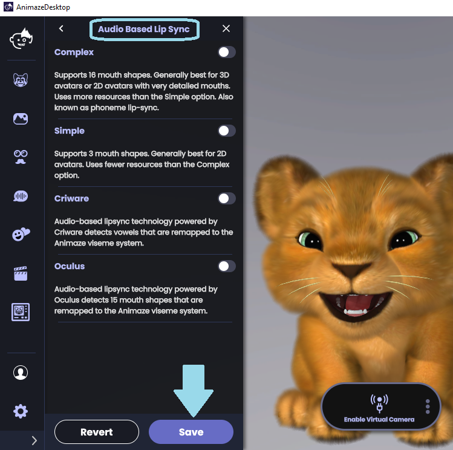
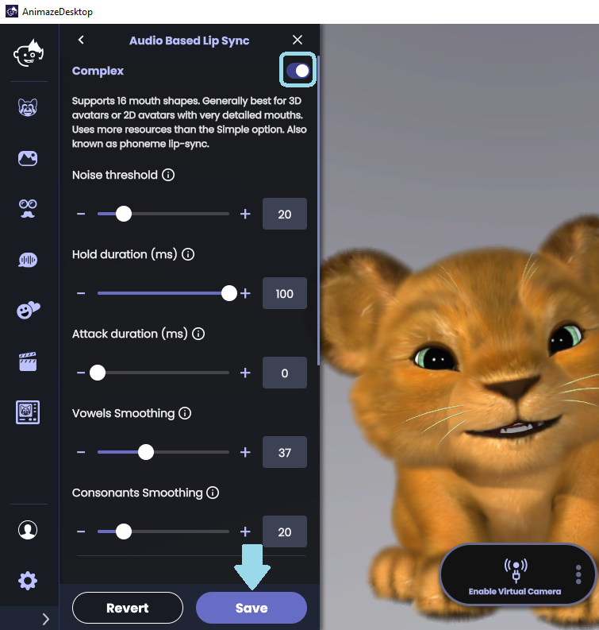
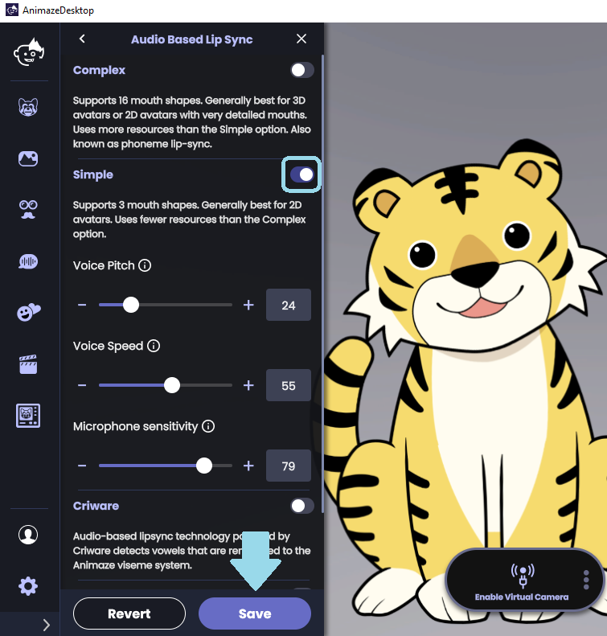
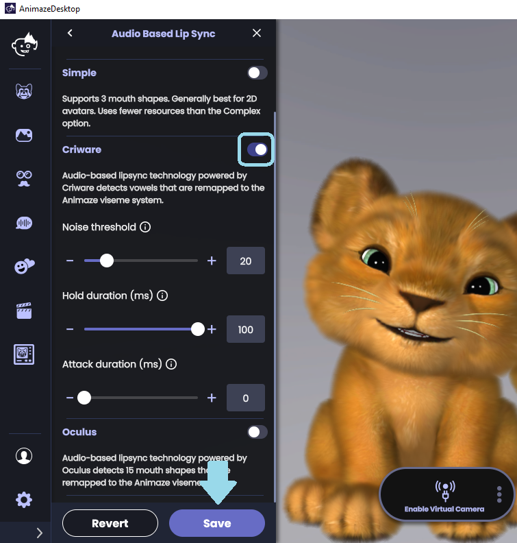
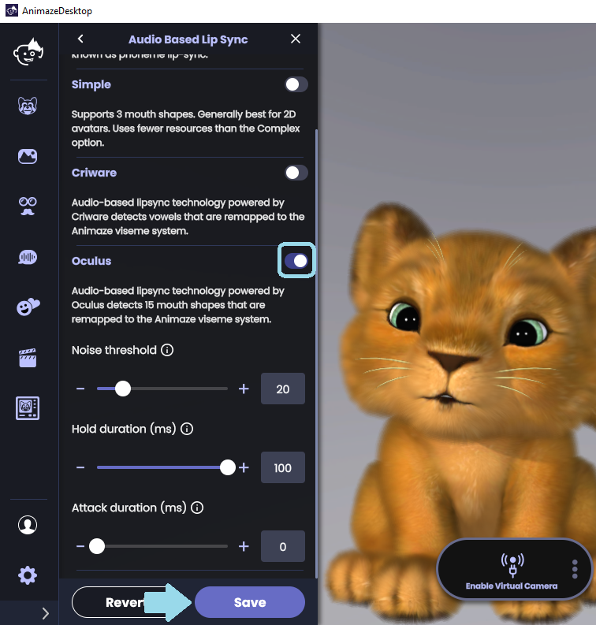

音声ベースのリップシンクを使うには、どうすれば良いですか？
Animazeには4つの音声ベースのリップシンクオプションがあります:複雑な音声ベースのリップシンク、シンプルな音声ベースのリップシンク、Criware、Oculusリップシンクです。

複雑な音声ベースのリップシンクは16種類の口の形に対応し、一般的に、非常に詳細な口を持つ3Dアバターまたは2Dアバターに最適です。複雑な音声ベースのリップシンクを以下の操作でセットアップに調整してください:
- ノイズのしきい値は、アバターの口を開けるのに必要な音声の振幅の変更に使用します。非常に静かな環境にいる場合、ノイズのしきい値を低く設定すると最大の応答性を得られます。雑音がある場合、ノイズのしきい値を高くすると、背景の雑音でアバターの口が有効になりません。
- 長押し時間（ms）は、ノイズゲートが開いて閉じるまでの瞬間の時間を設定します。単語間でノイズゲートが閉じるのを防ぐために使用します。長押し時間が長いと、口の動きが止まる前の停止時間が長くなります。
- アタック時間（ms）は、ノイズゲートが開いて閉じるまでの時間を設定します。アタック時間が長いと、口が動き出すまでに多くの入力が必要になります。
- 母音として検出された入力の母音のスムージングを設定できます。スムージングを高くすると、口の動きは安定しますが、反応は悪くなります。
- 子音として検出された入力の子音のスムージングを設定できます。スムージングを高くすると、口の動きは安定しますが、反応は悪くなります。

シンプルな音声ベースのリップシンクは3つの口の形に対応しています。これは一般的に、2Dアバターに最適です。
- 声のピッチは、リップシンクのアルゴリズムをユーザーの声の周波数に合わせて調整します。自分の声のピッチにスライダーを合わせてください。右に行くとピッチが高く、左に行くとピッチが低くなります。
- 声の話す速度は、リップシンクのアルゴリズムをあなたの話す速度に合わせて調整します。あなたが早口な場合、スライダーを右に移動させてください。逆に、喋るのが遅い場合はスライダーを左にセットします。
- マイクの感度は、音声入力の増幅を調整します。マイクに近いと、値が低くなります。マイクに遠いと、値が高くなります。

3. Criwareは、母音を検知してAnimaze口形素システムにリマッピングします。
ノイズのしきい値 - アバターの口を開けるのに必要な音声の振幅を変更します。静かな環境にいる場合、ノイズのしきい値を低く設定すると最大の応答性を得られます。雑音がある場合、ノイズのしきい値を高くすると、背景の雑音でアバターの口が有効になりません。
長押し時間（ms）は、ノイズゲートが開いて閉じるまでの時間を設定します。単語間でノイズゲートが閉じるのを防ぐために使用します。長押し時間が長いと、口の動きが止まる前の停止時間が長くなります。
アタック時間（ms）は、ノイズゲートが開いて閉じるまでの時間を設定します。アタック時間が長いと、口が動き出すまでに多くの入力が必要になります。

4.OVRリップシンク(Oculus)は、15の口の形を検知してAnimaze口形素システムにリマッピングします
a. ノイズのしきい値 - アバターの口を開けるのに必要な音声の振幅を変更します。静かな環境にいる場合、ノイズのしきい値を低く設定すると最大の応答性を得られます。雑音がある場合、ノイズのしきい値を高くすると、背景の雑音でアバターの口が有効になりません。
b. 長押し時間（ms）は、ノイズゲートが開いて閉じるまでの時間を設定します。単語間でゲートが閉じるのを防ぐために使用します。長押し時間が長いと、口の動きが止まる前の停止が時間が長くなります。
c. アタック時間（ms）は、ノイズゲートが開いて閉じるまでの時間を設定します。アタック時間が長いと、口が動き出すまでに多くの入力が必要になります。

利用可能なリップシンクトラッカーのいずれかを有効にして変更を加えた後、「保存」をクリックしてトラッキングの設定を保存し、「音声ベースのリップシンク」のドロワーメニューを終了します。